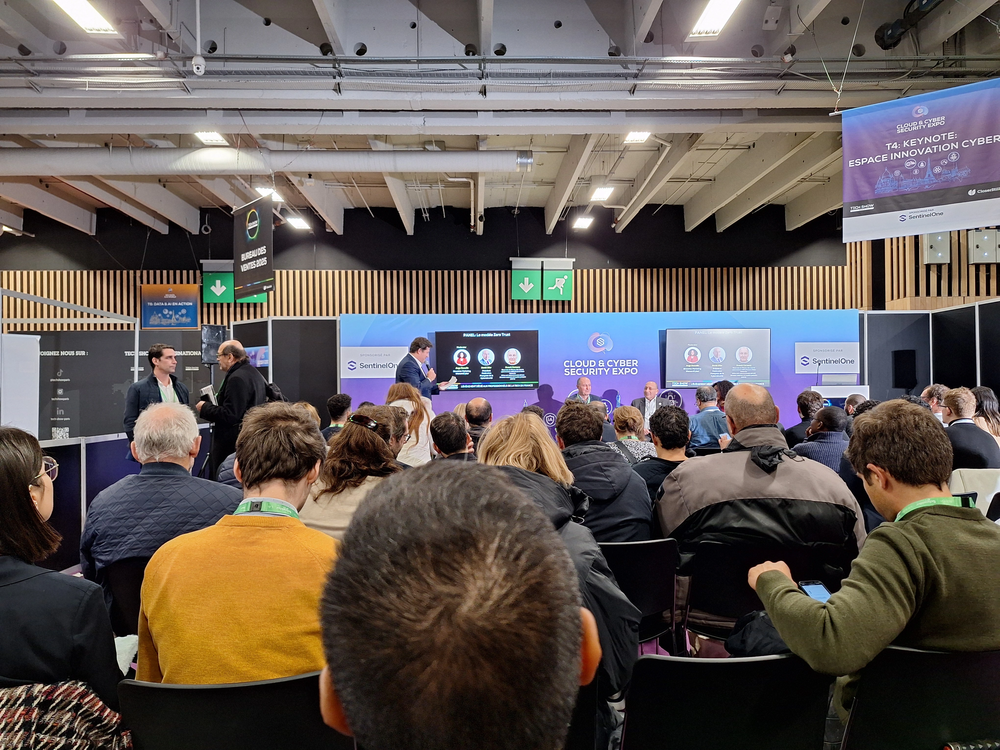
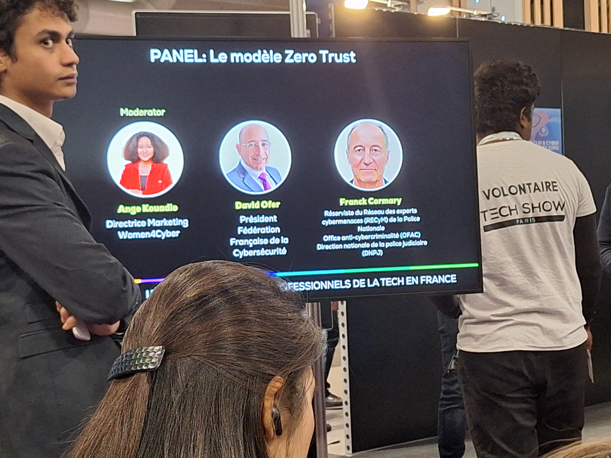
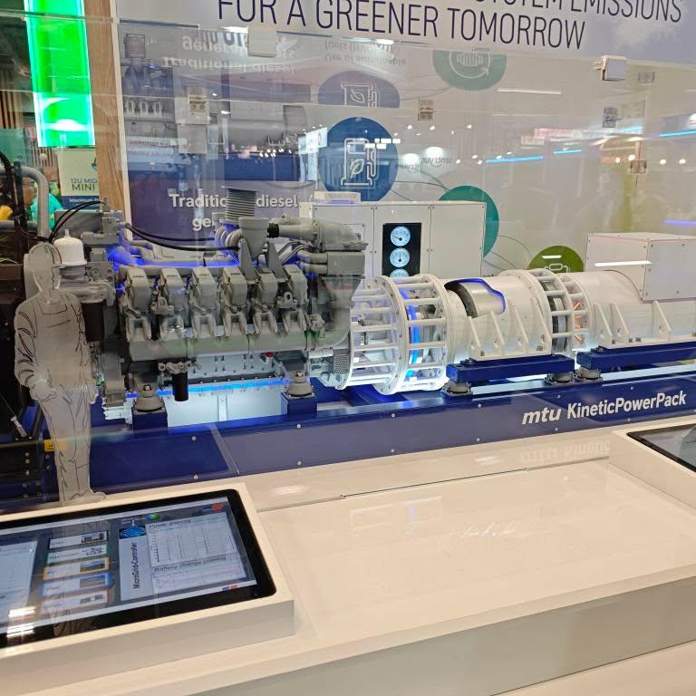

Conférence 1 : Données de santé : comment l'IA transforme les soins et l'innovation

La deuxième conférence était dédiée à la démarche de sécurisation des systèmes d’information, dénommée Zero Trust. Elle a réuni une intéressante réflexion sur « la définition des protocoles d’accèss aux ressources et la construction de modèles opérationnels
pour une meilleure sécurité. » Ils se sont aussi posé une question intéressante : pourquoi le modèle Zero Trust est devenu une nécessité aujourd’hui ? Et leur réponse fut tout aussi marquante que la question : « Il l’a toujours été… »
Une manière de dire que ce n’est pas nouveau mais que cela n’a jamais été aussi essentiel face aux menaces contemporaines.
Comment l'IA

Nous avons aussi parlé de la Keynote dédiée à l’innovation dans le domaine de la cybersécurité avec des questions sur Cyber, SentinelOne et d’autres solutions avancées. Pour conclure, cette conférence nous a bien rappelé les enjeux contemporains
de la cybersécurité et l’importance que représente une démarche comme le zero trust pour garantir la protection des systèmes.
Les moteurs

Lsors de notre visite, nous avons également pu voir de très gros moteurs, comme ceux pour des centrales MTU 12V 4000 (2 x 2000 CV), utilisés dans des infrastructures critiques (certains hôpitaux) : la puissance des machines est impressionnante,
tout autant que leur coût.
En revanche, le nombre de données générées et la nécessité de précision nous ont été décrits comme extrêmement élevés. De même, il nous a été expliqué que cette étape de codage intervenait en amont de la
phase mécanique. Elle permet de simuler et optimiser avant de proposer physiquement les moteurs. L’intégration numérique au sein de projets mécaniques est passionnante!